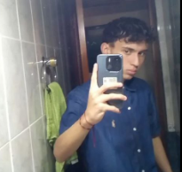

Ruben Colmenares
San antonio de los altos la rosaleda
ruben.50.yt@gmail.com
Datos Generales
Fecha de nacimiento: 11/05/2005
cedula:31313496
Nacionalidad:Venezolano/Español
Estado civil: Soltero
Formacion Academica
Escuela primaria: Edith Stein
Bachillerato:Edith Stein
Estudios Universitarios: Tsu en Informatica (en proceso) en la Unetrans
Experiencia laboral
ninguna
Videojuego favorito y deporte
Zelda Majora's mask
Futbol